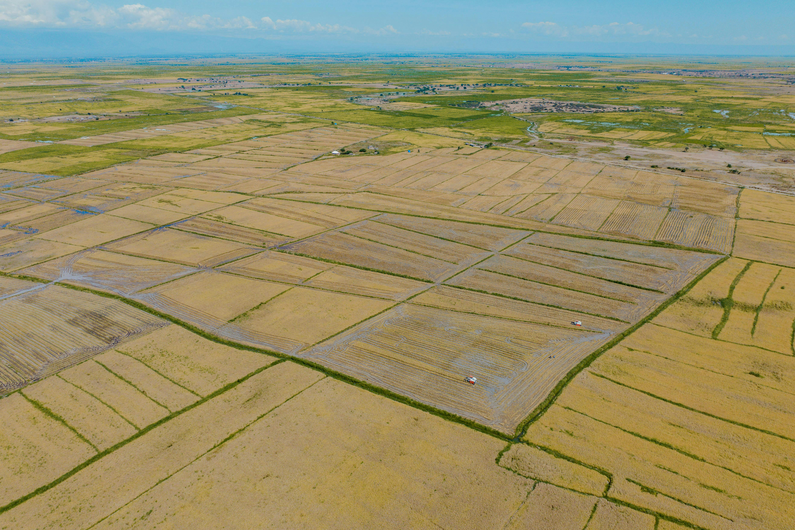
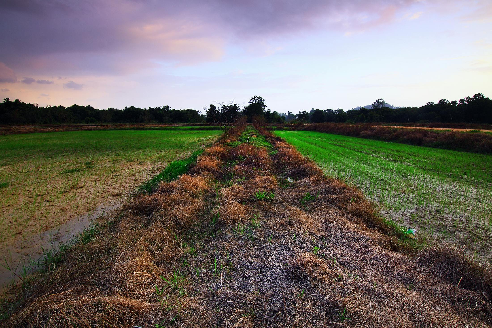

Alluvium (from Latin alluvius, from alluere 'to wash against') is loose clay, silt, sand, or gravel that has been deposited by running water in a stream bed, on a floodplain, in an alluvial fan or beach, or in similar settings.[1][2][3] Alluvium is also sometimes called alluvial deposit.[4][5] Alluvium is typically geologically young and is not consolidated into solid rock. Sediments deposited underwater, in seas, estuaries, lakes, or ponds, are not described as alluvium.[1] Floodplain alluvium can be highly fertile, and supported some of the earliest human civilizations.
The present consensus is that "alluvium" refers to loose sediments of all types deposited by running water in floodplains or in alluvial fans or related landforms.[1][7][8] However, the meaning of the term has varied considerably since it was first defined in the French dictionary of Antoine Furetière, posthumously published in 1690. Drawing upon concepts from Roman law, Furetière defined alluvion (the French term for alluvium) as new land formed by deposition of sediments along rivers and seas.[8]
By the 19th century, the term had come to mean recent sediments deposited by rivers on top of older diluvium, which was similar in character but interpreted as sediments deposited by Noah's flood. With the rejection by geologists of the concept of a primordial universal flood, the term "diluvium" fell into disfavor and was replaced with "older alluvium". At the same time, the term "alluvium" came to mean all sediment deposits due to running water on plains. The definition gradually expanded to include deposits in estuaries and coasts and young rock of both marine and fluvial origin.[8]
Alluvium and diluvium were grouped together as colluvium in the late 19th century. "Colluvium" is now generally understood to mean sediments produced by gravity-driven transport on steep slopes, while the definition of "alluvium" has switched back to an emphasis on sediments deposited by river action. There continues to be disagreement over what other sediment deposits should be included under the term "alluvium".

Chernozem (/ˈtʃɜːrnəzɛm/ CHUR-nə-zem),[a] also called black soil, regur soil or black cotton soil, is a black-colored soil containing a high percentage of humus[3] (4% to 16%) and high percentages of phosphorus and ammonia compounds.[4] Chernozem is very fertile soil and can produce high agricultural yields with its high moisture-storage capacity.[b] Chernozems are a Reference Soil Group of the World Reference Base for Soil Resources (WRB).
The name comes from the Russian terms for black (чёрный čjornyj) and soil, earth or land (земля zemlja).[2][3] The soil, rich in organic matter presenting a black color, was first identified by the Russian geologist Vasily Dokuchaev in 1883 in the tallgrass steppe or prairie of Eastern Ukraine and Western Russia.
Chernozem cover about 230 million hectares of land. There are two "chernozem belts" in the world. One is the Eurasian steppe that extends from eastern Croatia (Slavonia), along the Danube (northern Serbia, northern Bulgaria (Danubian Plain), southern and eastern Romania (Wallachian Plain and Moldavian Plain), and Moldova, to northeast Ukraine across the Central-Chernozem Strip of Central and Southern Russia into Siberia. The other stretches from the Canadian Prairies in Manitoba through the Great Plains of the United States as far south as Kansas.[5] Chernozem layer thickness may vary widely, from several centimetres up to 1.5 metres (60 inches) in Ukraine,[6] as well as the Red River Valley region in the northern United States and Canada (location of the prehistoric Lake Agassiz).
The terrain can also be found in small quantities elsewhere (for example, on 1% of Poland, Hungary, and Texas). It also exists in Northeast China, near Harbin. The only true chernozem in Australia is located around Nimmitabel, some of the richest soils on the continent.[7]
Previously, there was a black market for the soil in Ukraine. The sale of agricultural land was illegal in Ukraine from 1992 to 2020,[8] but the soil, transported by truck, could be traded legally. According to the Kharkiv-based Green Front NGO, the black market for illegally acquired chernozem in Ukraine was projected to reach approximately US$900 million per year in 2011.

Red soil is a type of soil that typically develops in warm, temperate, and humid climates and comprises approximately 13% of Earth's soils.[1] It contains thin organic and organic-mineral layers of highly leached soil resting on a red layer of alluvium. Red soils contain large amounts of clay and are generally derived from the weathering of ancient crystalline and metamorphic rock. They are named after their rich red color, varying from reddish brown to reddish yellow due to their high iron content.[2] Red soil can be good or poor growing soil depending on how it is managed. It is usually low in nutrients and humus and can be difficult to cultivate due to its low water holding capacity; however, the fertility of these soils can be optimized with liming and other farming techniques.[1]
Red soils are an important resource because they make up such a large portion of farmland on the earth. In countries such as China, India, and Greece, where there are large amounts of red soil, understanding the soil's properties is crucial to successful agriculture. Red soil properties vary across regions and may require different management practices to achieve the best results.
Red soils include multiple soil types (e.g. ultisols, alfisols, oxisols) that are classified as red soil when they develop a distinct reddish color, which can vary from reddish brown to reddish yellow due to their high iron content.[1] In general, red soils possess some characteristics of a good growing soil. They are generally acidic soils, which can be positive for agriculture but, in this case, often cause a lack of sufficient nutrients. These soils are also prone to frequent drought in drier regions.
Laterite is a soil type rich in iron and aluminium and is commonly considered to have formed in hot and wet tropical areas. Nearly all laterites are of rusty-red coloration, because of high iron oxide content. They develop by intensive and prolonged weathering of the underlying parent rock, usually when there are conditions of high temperatures and heavy rainfall with alternate wet and dry periods.[1] The process of formation is called laterization.[2] Tropical weathering is a prolonged process of chemical weathering which produces a wide variety in the thickness, grade, chemistry and ore mineralogy of the resulting soils. The majority of the land area containing laterites is between the tropics of Cancer and Capricorn.
Laterite has commonly been referred to as a soil type as well as being a rock type. This, and further variation in the modes of conceptualizing about laterite (e.g. also as a complete weathering profile or theory about weathering), has led to calls for the term to be abandoned altogether. At least a few researchers, including T. R. Paton and M. A. J. Williams,[3] specializing in regolith development have considered that hopeless confusion has evolved around the name. Material that looks highly similar to the Indian laterite occurs abundantly worldwide.
Historically, laterite was cut into brick-like shapes and used in monument-building. After 1000 CE, construction at Angkor Wat and other southeast Asian sites changed to rectangular temple enclosures made of laterite, brick, and stone. Since the mid-1970s, some trial sections of bituminous-surfaced, low-volume roads have used laterite in place of stone as a base course. Thick laterite layers are porous and slightly permeable, so the layers can function as aquifers in rural areas. Locally available laterites have been used in an acid solution, followed by precipitation to remove phosphorus and heavy metals at sewage-treatment facilities.
Laterites are a source of aluminum ore; the ore exists largely in clay minerals and the hydroxides, gibbsite, boehmite, and diaspore, which resembles the composition of bauxite. In Northern Ireland they once provided a major source of iron and aluminum ores. Laterite ores also were the early major source of nickel.

A desert is a landscape where little precipitation occurs and, consequently, living conditions create unique biomes and ecosystems. The lack of vegetation exposes the unprotected surface of the ground to denudation. About one-third of the land surface of the Earth is arid or semi-arid. This includes much of the polar regions, where little precipitation occurs, and which are sometimes called polar deserts or "cold deserts". Deserts can be classified by the amount of precipitation that falls, by the temperature that prevails, by the causes of desertification or by their geographical location.
Deserts are formed by weathering processes as large variations in temperature between day and night put strains on the rocks, which consequently break in pieces. Although rain seldom occurs in deserts, there are occasional downpours that can result in flash floods. Rain falling on hot rocks can cause them to shatter, and the resulting fragments and rubble strewn over the desert floor are further eroded by the wind. This picks up particles of sand and dust, which can remain airborne for extended periods – sometimes causing the formation of sand storms or dust storms. Wind-blown sand grains striking any solid object in their path can abrade the surface. Rocks are smoothed down, and the wind sorts sand into uniform deposits. The grains end up as level sheets of sand or are piled high in billowing sand dunes. Other deserts are flat, stony plains where all the fine material has been blown away and the surface consists of a mosaic of smooth stones, often forming desert pavements, and little further erosion takes place. Other desert features include rock outcrops, exposed bedrock and clays once deposited by flowing water. Temporary lakes may form and salt pans may be left when waters evaporate. There may be underground sources of water, in the form of springs and seepages from aquifers. Where these are found, oases can occur.
A forest is an ecosystem characterized by a dense community of trees.[2] Hundreds of definitions of forest are used throughout the world, incorporating factors such as tree density, tree height, land use, legal standing, and ecological function.[3][4][5] The United Nations' Food and Agriculture Organization (FAO) defines a forest as, "Land spanning more than 0.5 hectares with trees higher than 5 meters and a canopy cover of more than 10 percent, or trees able to reach these thresholds in situ. It does not include land that is predominantly under agricultural or urban use."[6] Using this definition, Global Forest Resources Assessment 2020 found that forests covered 4.06 billion hectares (10.0 billion acres; 40.6 million square kilometres; 15.7 million square miles), or approximately 31 percent of the world's land area in 2020.[7]
Forests are the largest terrestrial ecosystems of Earth by area, and are found around the globe.[8] 45 percent of forest land is in the tropical latitudes. The next largest share of forests are found in subarctic climates, followed by temperate, and subtropical zones.[9]
Forests account for 75% of the gross primary production of the Earth's biosphere, and contain 80% of the Earth's plant biomass. Net primary production is estimated at 21.9 gigatonnes of biomass per year for tropical forests, 8.1 for temperate forests, and 2.6 for boreal forests.[8]
Forests form distinctly different biomes at different latitudes and elevations, and with different precipitation and evapotranspiration rates.[10] These biomes include boreal forests in subarctic climates, tropical moist forests and tropical dry forests around the Equator, and temperate forests at the middle latitudes. Forests form in areas of the Earth with high rainfall, while drier conditions produce a transition to savanna. However, in areas with intermediate rainfall levels, forest transitions to savanna rapidly when the percentage of land that is covered by trees drops below 40 to 45 percent.[11] Research conducted in the Amazon rainforest shows that trees can alter rainfall rates across a region, releasing water from their leaves in anticipation of seasonal rains to trigger the wet season early. Because of this, seasonal rainfall in the Amazon begins two to three months earlier than the climate would otherwise allow.[12][13] Deforestation in the Amazon and anthropogenic climate change hold the potential to interfere with this process, causing the forest to pass a threshold where it transitions into savanna.[14]
Deforestation threatens many forest ecosystems. Deforestation occurs when humans remove trees from a forested area by cutting or burning, either to harvest timber or to make way for farming. Most deforestation today occurs in tropical forests. The vast majority of this deforestation is because of the production of four commodities: wood, beef, soy, and palm oil.[15] Over the past 2,000 years, the area of land covered by forest in Europe has been reduced from 80% to 34%. Large areas of forest have also been cleared in China and in the eastern United States,[16] in which only 0.1% of land was left undisturbed.[17] Almost half of Earth's forest area (49 percent) is relatively intact, while 9 percent is found in fragments with little or no connectivity. Tropical rainforests and boreal coniferous forests are the least fragmented, whereas subtropical dry forests and temperate oceanic forests are among the most fragmented. Roughly 80 percent of the world's forest area is found in patches larger than 1 million hectares (2.5 million acres). The remaining 20 percent is located in more than 34 million patches around the world – the vast majority less than 1,000 hectares (2,500 acres) in size.[9]
Human society and forests can affect one another positively or negatively.[18] Forests provide ecosystem services to humans and serve as tourist attractions. Forests can also affect people's health. Human activities, including unsustainable use of forest resources, can negatively affect forest ecosystems.